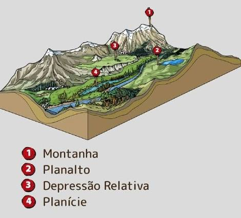
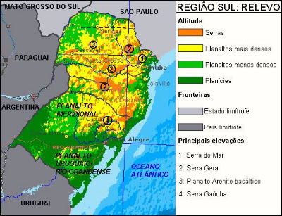
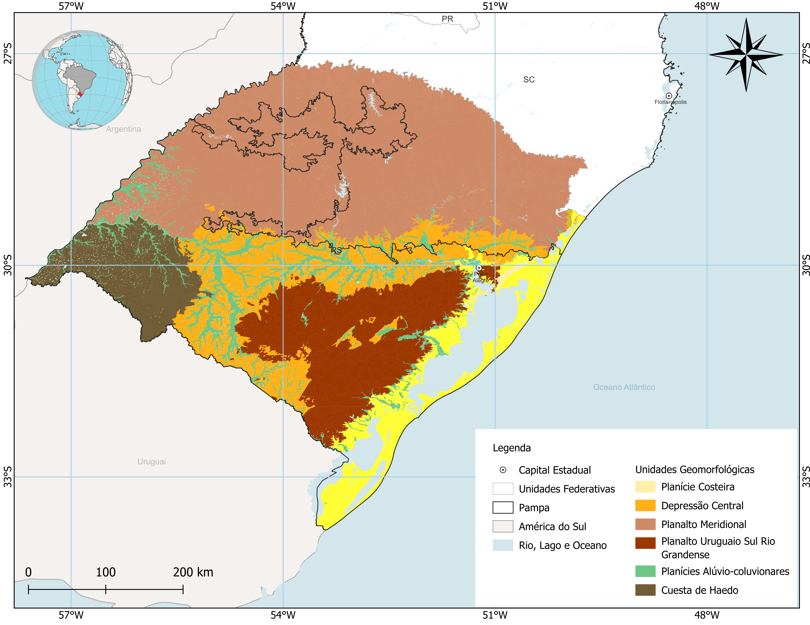
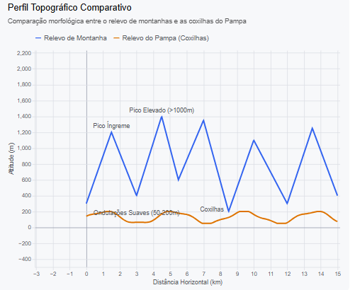

O Que é o Relevo?
O relevo é o conjunto das formas da superfície terrestre, ou seja, todas as variações de altura, curvas, montanhas, vales e planícies que desenham a paisagem do nosso planeta. Ele é o resultado de forças internas da Terra (como o movimento de placas tectônicas) combinadas com agentes externos (como a chuva, o vento e os rios) que esculpem o solo ao longo de milhões de anos.

Como é o Relevo nas Pradarias:
Embora a palavra indígena "pampa" signifique "terra plana", o relevo da região está longe de ser um tapete perfeitamente liso.
A principal característica do relevo do Pampa é o chamado relevo suave-ondulado, marcado pelas famosas coxilhas. As coxilhas são colinas baixas, suaves e arredondadas que criam um visual de "ondas" verdes no horizonte. Entre uma coxilha e outra, formam-se grandes planícies e áreas rebaixadas.

Tipo de Relevo nas Pradarias
- Planalto da Campanha: Região de ondulações suaves e áreas onde o arenito aflora na superfície.
- Depressão Central: Áreas mais baixas localizadas ao longo dos vales dos rios principais.
- Planalto Sul-Rio-Grandense: Uma região com formações rochosas muito antigas, onde o relevo é um pouco mais acidentado e rochoso.
- Planície Costeira: Áreas totalmente planas próximas ao oceano e às grandes lagoas.

Como os Cientistas Estudam o Relevo
Geógrafos, topógrafos e engenheiros utilizam uma combinação de técnicas tradicionais de campo e tecnologias de ponta para entender a estrutura e a altimetria do Pampa:
Curvas de Nível e Mapas Topográficos: O relevo é desenhado em mapas usando linhas que unem pontos de mesma altitude.
Imagens de Satélite e Sensores Remotos: Cientistas utilizam dados de satélites e radares espaciais para criar Modelos Digitais de Elevação.
GPS de Alta Precisão e Drones: Equipes utilizam receptores GPS geodésicos e drones para medir coordenadas e altitudes com precisão.
